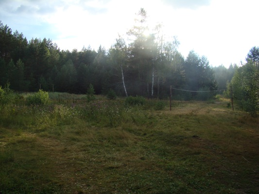

2013 год
У флагштока Хлебикова Дарья и
Алферов Олег
Приветствие участников экспедиции
от директора филиала ПГТА в г. Кузнецке Устенко Н.М.
Приветственное слово главного инженера
2-го завода г. Кузнецка Макарова П.В.
На ознакомительной экскурсии
За установкой ловушек для жужелиц
За установкой ловушек для жужелиц
Лесными тропами в поисках неизвестного
Не страшны нам любые дороги
Пробуем свои силы на навесной
переправе
У нас в гостях Глава городской
администрации Златогорский С.А. и Начальник управления образования
Борисова Л.А.

Лесные нимфы
Девочкам это тоже под силу

Грозя ушла

Волебольная площадка пустует после
дождя

Наши водители
2013 г.
В июле 2013 года прошла традиционная смена экологического палаточного
лагеря-экспедиции «В гостях у природы» при поддержке администрации
города Кузнецка и Управления образования. Смена проходила в течение 12
дней на берегу красивейшего Шалкеевского пруда, расположенного в
Двориковском водно-лесном комплексе Кузнецкого района в 25 км от города
Кузнецка. Данное место уже не раз выбиралось для стоянки
туристов-экологов. Обилие степных, лесных и водных биотопов давно
привлекает в эти места истинных любителей природы. Давно ставится
вопрос перед администрацией области о переведении данного комплекса в
разряд особо охраняемой территории. Комплекс богат редкими
представителями флоры и фауны, в том числе занесенными в Красную книгу
Российской Федерации и Пензенской области. В основном, в лагере
сменился состав участников, так как большинство участников прошлого
года закончили школу. Участники смены 2013 года обучаются в 6 – 11
классах школ города Кузнецка (№№ 1, 3, 8).
В лагере традиционными были экскурсионные исследовательские выходы в
лес, степные районы с целью изучения флоры и фауны, водных биотопов.
Собирался практический материал для написания исследовательских научных
проектов. Экскурсии проводили руководитель лагеря – Иванов С.В.,
секретарь Пензенского энтомологического общества – Полумордвинов О.А.,
любитель-энтомолог Шибаев С.В., аспирантка Пронина И.
Наряду с исследованиями в лагере большое внимание уделялось и здоровому
образу жизни. Наибольшей популярностью пользовался волейбол. Для этого
участники самостоятельно сделали площадку, натянули сетку. Надолго
запомнится всем матч против гостей лагеря. Хотя и потерпели поражение,
но в очень упорной борьбе. Был проведен шахматно-шашечный турнир.
Победители и призеры получили сладкие призы. Большой интерес вызвало у
ребят обучение навыкам туристической техники и умению вязать
туристические узлы. Не так то просто оказалось преодолеть навесную
переправу, «бабочку», качающееся бревно. Но всем, в том числе и
взрослым гостям, хотелось попробовать свои силы в преодолении этих
препятствий. Участники самостоятельно заботились о своем быте –
устанавливали и обустраивали лагерь, готовили пищу на костре, мыли
котлы, стирали одежду. А после различных мероприятий и купания в пруду
пища, приготовленная дежурными на костре, под руководством выпускницы
ПГСХА Хлебниковой Дарьи казалась безумно вкусной. В меню
лагеря-экспедиции было достаточно фруктов и овощей, и, конечно,
сладостей. Погода не подвела. Все дни стояла ясная и жаркая погода. И
только в последние сутки прошел проливной дождь, что явилось еще одним
испытанием для участников. И, как всегда, покидая лагерь, ребята
бросили в пруд по монетке и сказали лагерю «До свидания!»
2001 год
2002 год
2003 год
2004 год
2005 год
2006 год
2007 год
2009 год
2010 год
2011 год
2012 год
2014 год
2015 год
| 


{kind=link}
{kind=link}
{kind=link}
{kind=link}
{kind=link}
{kind=link}
{kind=link}
{kind=link}
{kind=link}
{kind=link}
{kind=link}
{kind=link}
{kind=link}
{kind=link}
{kind=link}
{kind=link}
{kind=link}
{kind=link}
{kind=link}
{kind=link}
{kind=link}
{kind=link}
{kind=link}
{kind=link}
{kind=link}
{kind=link}
{kind=link}
{kind=link}
{kind=link}
{kind=link}
{kind=link}
{kind=link}
{kind=link}
{kind=link}
{kind=link}
{kind=link}
{kind=link}
{kind=link}
{kind=link}
{kind=link}
{kind=link}
{kind=link}
{kind=link}
{kind=link}
{kind=link}